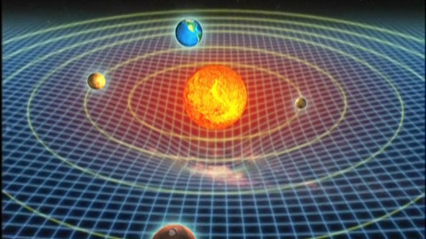

일반 상대성이론

일반 상대성 이론은 1915년에 아인슈타인이 발표하였다. (프로이센 과학 아카데미에서 1915년 11월 25일에 제출) 일반 상대성이론은 특수 상대성이론의 확장판이라 하면 이해하기 쉬울 것이다. 이 이론은 뉴턴의 고전 물리학에 결정타를 날림으로서 새로운 물리학적 이론의 길을 열었다는 점에서 의의가 있다고 할 수 있다.
일반상대성이론에 대해 알아보기 전에 먼저 이를 전개하기 위해 필요한 한 가지 가정을 보도록 하자.
등가원리 -가속 좌표계에서 지구로 인해 생기는 중력과 중력가속도g로 운동하는 것으로 인한 관성력은 구분할 수 없다 1. 시공간 일반 상대성 이론에서 아인슈타인은 '시공간은 4차원, 즉 시간과 공간이 결합된 형태의 연속체'임을 규명했다. 뉴턴이 시공간이 시간과 공간으로 분리되어 서로 영향을 주고받지 않는 별개의 공간인 점과, 공간위의 한 점에 위치한 물체에 어떠한 영향도 받지 않을 것이라고 생각한 반면에 아인슈타인의 사고실험에서 아인슈타인은 시공간이 서로 상호작용함과, 공간위에 위치한 어떠한 질량을 가진 물체에 대하여 공간이 휘어짐을 제시하였다. 2. 중력 아인슈타인은 뉴턴의 중력을 가속운동계에 적용시켰다. 그는 중력가속도g의 크기만큼 가속하는 가속계 내의 물체와, 중력을 받고있는 물체는 서로 구분이 불가능하다는 이론을 내세움으로서 가속계를 관성계로 해석가능함을 보였다. 3. 중력으로 인한 시간팽창 위에서 가속계 역시 관성계로 인식할 수 있다고 하였다. 따라서 가속계의 물체는 관성계에서 물체의 이동으로 판단할 수 있고, 특수 상대성이론에 따라 시간지연이 일어남을 알 수 있다. 이로서 중력을 받는 물체는 그 물체에 흐르는 시간이 느려지게 된다.
일반상대성이론에 대해 알아보기 전에 먼저 이를 전개하기 위해 필요한 한 가지 가정을 보도록 하자.
등가원리 -가속 좌표계에서 지구로 인해 생기는 중력과 중력가속도g로 운동하는 것으로 인한 관성력은 구분할 수 없다 1. 시공간 일반 상대성 이론에서 아인슈타인은 '시공간은 4차원, 즉 시간과 공간이 결합된 형태의 연속체'임을 규명했다. 뉴턴이 시공간이 시간과 공간으로 분리되어 서로 영향을 주고받지 않는 별개의 공간인 점과, 공간위의 한 점에 위치한 물체에 어떠한 영향도 받지 않을 것이라고 생각한 반면에 아인슈타인의 사고실험에서 아인슈타인은 시공간이 서로 상호작용함과, 공간위에 위치한 어떠한 질량을 가진 물체에 대하여 공간이 휘어짐을 제시하였다. 2. 중력 아인슈타인은 뉴턴의 중력을 가속운동계에 적용시켰다. 그는 중력가속도g의 크기만큼 가속하는 가속계 내의 물체와, 중력을 받고있는 물체는 서로 구분이 불가능하다는 이론을 내세움으로서 가속계를 관성계로 해석가능함을 보였다. 3. 중력으로 인한 시간팽창 위에서 가속계 역시 관성계로 인식할 수 있다고 하였다. 따라서 가속계의 물체는 관성계에서 물체의 이동으로 판단할 수 있고, 특수 상대성이론에 따라 시간지연이 일어남을 알 수 있다. 이로서 중력을 받는 물체는 그 물체에 흐르는 시간이 느려지게 된다.
4. 공간 왜곡으로 일어나는 현상 4-1. 빛의 휘어짐 : 빛의 움직임을 가속운동계에 적용시켜보면, 그 빛이 휜다는 것을 알 수 있을 것이다. 따라서 중력으로 인하여 빛이 휜다는 것을 알 수 있다 4-2. 중력렌즈효과 : 이는 일식이 일어날 때 관측할 수 있는 현상인데, 바로 태양의 뒤에 위치하여 가려져 있던 천체가 태양의 중력에 의한 영향으로 그 빛이 휘어져 우리눈에 들어오는 것이다. 흔히 '아인슈타인의 십자가'라는 것이 이로 인한 현상이다. 4-3. 블랙홀 : 질량이 매우 큰 천체는 공간을 심하게 왜곡하여 빛마저 삼켜버릴 수 있다. 5. 일반상대성이론의 증거 ① 에딩턴의 태양의 일식 관측 : 지구에서 별을 관측할 때, 별과 지구사이에 태양이 있을 때와 없을 때의 별의 관측위치를 비교하여 빛이 휘는 것을 관찰 ② 수성의 세차운동 : 뉴턴의 이론에 따라 계산하면 100년동안 574´´만큼 이동해야 하지만, 실제 세차운동 관측결과 43´´정도 오차가 났다. 하지만 일반상대성 이론에 시공간의 곡률을 고려한 결과 이 차이를 정확히 설명 ③ 중력렌즈 : 중력이 렌즈처럼 빛을 휘게 하는 현상이다. 대표적으로 퀘이사가 있다.(퀘이사는 은하의 중력 때문에 지구에서 4개의 빛나는 쌍둥이별로 오인했었다.) ④ 중력파 : 천체의 중력붕괴나 초신성폭발 같은 우주현상으로 발생하여 시공간이 일그러짐이 광속으로 파도처럼 전달되는 것을 말한다.(이전까지 발견되지 않고있다가 최근 블랙홀에서 발견되었다.) ⑤ GPS : 인공위성이 움직이기 때문에 시간차이가 생기는데 속력과 중력의 작용을 고려하여 보정해줘야 한다. ⑥ 블랙홀 : 질량이 매우 큰 천체는 공간을 휘게하여 천체를 지나는 빛마저 흡수한다.(아인슈타인이 2차원의 평면에 시간의 곡률을 표기한 그림에서 보면 블랙홀은 질량이 극도로 커 평면 자체가 엄청나게 움푹 들어가있다. 이때 블랙홀의 부분중 넘게되면 빛조차 절대 빠져나올수 없는 선이있는데 이곳을 사건의 지평선이라고 하며 이 안쪽부분은 어떠한것도 빠져나오지 못하므로 검게보인다.)